import pandas as pd
import numpy as np
import datetime as dt
import matplotlib.pyplot as plt
from fastdtw import fastdtw
import warnings
warnings.filterwarnings('ignore')Cherry Blossom Peak Bloom Predictions
Abstract
This experiment attempts to forecast peak bloom dates by using a temperature-based time-series pattern matching technique. By using historical weather data and bloom observations, the method identifies analogous climate sequences from past years to project future bloom timings.
The framework used is Fast Dynamic Time Warping (FastDTW), which compares recent temperature patterns with historical patterns, determining the most probable position in the bloom cycle. The dataset consists of daily temperature records for many years, formatted to represent the cycles of dormancy and bloom. To improve predictive accuracy, we introduce derived features including cumulative degree days, rolling temperature sums, and sum of squares of temperature values, and more.
When testing the model, partial temperature sequences from historical bloom years are selected and compared in alignment to actual bloom dates. By iteratively sliding time windows over historical records, we can evaluate how closely predicted bloom dates match observed events through minimizng the Euclidean norm.
Despite the many limitations in this design, it may prove beneficial to track bloom dates in terms of cyles and patterns. This tool of sliding windows to find patterns in the data can allow us to forecast any time-series datasets.
Introduction
This project aims to predict Cherry Blossom peak bloom dates (PBD) for 2025 at 5 locations around the world. Historical data on Cherry Blossom PBD was used to model bloom cycles, where the beginning of the cycle represents one day after previous PBD, and the final day represents the current PBD. These cycles are compared to one another, mapping similar trends on functions of temperature. In particular, the days leading up to the bloom were closely analyzed, allowing us to theoretically input a slice of current temperature data in order to predict how far along the cycle we are, thus generating an estimate for the future PBD.
Setup
This project uses python and related packages. Please ensure python is installed, as well as all other dependencies listed below:
# Import Bloom Datasets
washingtondc = pd.read_csv('data/washingtondc.csv')
liestal = pd.read_csv('data/liestal.csv')
kyoto = pd.read_csv('data/kyoto.csv')
vancouver = pd.read_csv('data/vancouver.csv')
newyorkcity = pd.read_csv('data/nyc.csv')# Create and engineer relevant features for Washington DC
# Years not included (missing data): 2000
wdc_weather_df = pd.read_csv('data/wdc_weather1990_2024.csv')
wdc_weather_df.reset_index(drop=True, inplace=True)
wdc_weather_df['Date'] = pd.to_datetime(wdc_weather_df['Date'])
wdc_weather_df.sort_values(by='Date',inplace=True)
wdc_weather_df.drop(columns=['index'], inplace=True)
wdc_weather_df| Temp_max | Temp_avg | Temp_min | Dew_max | Dew_avg | Dew_min | Hum_max | Hum_avg | Hum_min | Wind_max | Wind_avg | Wind_min | Pres_max | Pres_avg | Pres_min | Precipitation | Date | |
|---|---|---|---|---|---|---|---|---|---|---|---|---|---|---|---|---|---|
| 0 | 46 | 39.4 | 0 | 45 | 25.3 | 0 | 96 | 55.0 | 0 | 24 | 17.5 | 8 | 30.3 | 29.9 | 29.6 | 0.00 | 1990-01-01 |
| 1 | 46 | 36.3 | 29 | 28 | 23.0 | 20 | 86 | 60.5 | 39 | 12 | 8.0 | 6 | 30.5 | 30.4 | 30.3 | 0.00 | 1990-01-02 |
| 2 | 50 | 37.0 | 30 | 30 | 27.2 | 22 | 89 | 70.2 | 39 | 12 | 5.8 | 2 | 30.4 | 30.3 | 30.3 | 0.00 | 1990-01-03 |
| 3 | 55 | 32.8 | 0 | 51 | 27.3 | 0 | 97 | 74.4 | 0 | 17 | 10.4 | 3 | 30.3 | 30.0 | 29.9 | 0.00 | 1990-01-04 |
| 4 | 51 | 45.4 | 42 | 46 | 36.5 | 31 | 100 | 72.8 | 50 | 15 | 8.0 | 0 | 30.2 | 30.1 | 29.9 | 0.00 | 1990-01-05 |
| ... | ... | ... | ... | ... | ... | ... | ... | ... | ... | ... | ... | ... | ... | ... | ... | ... | ... |
| 12412 | 49 | 42.0 | 36 | 38 | 30.5 | 27 | 82 | 64.4 | 50 | 7 | 3.0 | 0 | 30.5 | 30.4 | 30.3 | 0.00 | 2024-12-27 |
| 12413 | 53 | 47.0 | 42 | 50 | 44.2 | 39 | 94 | 89.8 | 86 | 12 | 4.6 | 0 | 30.3 | 30.2 | 30.2 | 0.29 | 2024-12-28 |
| 12414 | 67 | 56.5 | 50 | 56 | 51.6 | 46 | 93 | 84.2 | 59 | 21 | 8.0 | 0 | 30.2 | 30.0 | 29.6 | 0.35 | 2024-12-29 |
| 12415 | 63 | 55.8 | 44 | 53 | 37.5 | 27 | 86 | 54.4 | 27 | 21 | 9.0 | 3 | 29.9 | 29.7 | 29.6 | 0.03 | 2024-12-30 |
| 12416 | 63 | 50.3 | 40 | 47 | 40.5 | 35 | 90 | 71.5 | 41 | 32 | 8.2 | 0 | 29.9 | 29.7 | 29.5 | 0.00 | 2024-12-31 |
12417 rows × 17 columns
wdc_bloomdates_df = pd.DataFrame(washingtondc)
wdc_bloomdates_df = wdc_bloomdates_df[wdc_bloomdates_df['year'] >= 1990]
wdc_bloomdates_df = wdc_bloomdates_df.drop(wdc_bloomdates_df[wdc_bloomdates_df['year'] == 2000].index)
wdc_bloomdates_df['bloom_date'] = pd.to_datetime(wdc_bloomdates_df['bloom_date'])
wdc_bloomdates_df.reset_index(drop=True, inplace=True)
wdc_bloomdates_df| location | lat | long | alt | year | bloom_date | bloom_doy | |
|---|---|---|---|---|---|---|---|
| 0 | washingtondc | 38.88535 | -77.038628 | 0 | 1990 | 1990-03-15 | 74 |
| 1 | washingtondc | 38.88535 | -77.038628 | 0 | 1991 | 1991-03-29 | 88 |
| 2 | washingtondc | 38.88535 | -77.038628 | 0 | 1992 | 1992-04-07 | 98 |
| 3 | washingtondc | 38.88535 | -77.038628 | 0 | 1993 | 1993-04-11 | 101 |
| 4 | washingtondc | 38.88535 | -77.038628 | 0 | 1994 | 1994-04-05 | 95 |
| 5 | washingtondc | 38.88535 | -77.038628 | 0 | 1995 | 1995-04-02 | 92 |
| 6 | washingtondc | 38.88535 | -77.038628 | 0 | 1996 | 1996-04-04 | 95 |
| 7 | washingtondc | 38.88535 | -77.038628 | 0 | 1997 | 1997-03-26 | 85 |
| 8 | washingtondc | 38.88535 | -77.038628 | 0 | 1998 | 1998-03-27 | 86 |
| 9 | washingtondc | 38.88535 | -77.038628 | 0 | 1999 | 1999-04-05 | 95 |
| 10 | washingtondc | 38.88535 | -77.038628 | 0 | 2001 | 2001-04-06 | 96 |
| 11 | washingtondc | 38.88535 | -77.038628 | 0 | 2002 | 2002-04-02 | 92 |
| 12 | washingtondc | 38.88535 | -77.038628 | 0 | 2003 | 2003-04-02 | 92 |
| 13 | washingtondc | 38.88535 | -77.038628 | 0 | 2004 | 2004-03-31 | 91 |
| 14 | washingtondc | 38.88535 | -77.038628 | 0 | 2005 | 2005-04-09 | 99 |
| 15 | washingtondc | 38.88535 | -77.038628 | 0 | 2006 | 2006-03-30 | 89 |
| 16 | washingtondc | 38.88535 | -77.038628 | 0 | 2007 | 2007-04-01 | 91 |
| 17 | washingtondc | 38.88535 | -77.038628 | 0 | 2008 | 2008-03-26 | 86 |
| 18 | washingtondc | 38.88535 | -77.038628 | 0 | 2009 | 2009-04-01 | 91 |
| 19 | washingtondc | 38.88535 | -77.038628 | 0 | 2010 | 2010-03-31 | 90 |
| 20 | washingtondc | 38.88535 | -77.038628 | 0 | 2011 | 2011-03-29 | 88 |
| 21 | washingtondc | 38.88535 | -77.038628 | 0 | 2012 | 2012-03-20 | 80 |
| 22 | washingtondc | 38.88535 | -77.038628 | 0 | 2013 | 2013-04-09 | 99 |
| 23 | washingtondc | 38.88535 | -77.038628 | 0 | 2014 | 2014-04-10 | 100 |
| 24 | washingtondc | 38.88535 | -77.038628 | 0 | 2015 | 2015-04-10 | 100 |
| 25 | washingtondc | 38.88535 | -77.038628 | 0 | 2016 | 2016-03-25 | 85 |
| 26 | washingtondc | 38.88535 | -77.038628 | 0 | 2017 | 2017-03-25 | 84 |
| 27 | washingtondc | 38.88535 | -77.038628 | 0 | 2018 | 2018-04-05 | 95 |
| 28 | washingtondc | 38.88535 | -77.038628 | 0 | 2019 | 2019-04-01 | 91 |
| 29 | washingtondc | 38.88535 | -77.038628 | 0 | 2020 | 2020-03-20 | 80 |
| 30 | washingtondc | 38.88535 | -77.038628 | 0 | 2021 | 2021-03-28 | 87 |
| 31 | washingtondc | 38.88535 | -77.038628 | 0 | 2022 | 2022-03-21 | 80 |
| 32 | washingtondc | 38.88535 | -77.038628 | 0 | 2023 | 2023-03-23 | 82 |
| 33 | washingtondc | 38.88535 | -77.038628 | 0 | 2024 | 2024-03-17 | 77 |
Now we have two dataframes:
wdc_weather_df, daily weather data wdc_bloomdates_df, with bloom dates for each year
Since we want to compare a bloom cycle, i.e from dormancy to bloom, we will count each year’s bloom as starting from the day after the previous bloom and ending with the current bloom.
temp_of_day_from_bloom_df:
- rows: day of bloom (1 denotes first day after previous bloom)
- column: cycle (year)
For example, if the column name is 1992_b, this means that this column the days leading up to the bloom in 1992. Thus the first row will take place in 1991, after the previous bloom 1991_b. The last value, prior to any NaN, is the bloom date.
Each column represents one cycle, from post-bloom dormancy to the next bloom.
We will also take the inverse of the dataframe, and call it temp_of_day_till_bloom_df:
- rows: day till bloom (1 denotes one day prior to the current bloom, and 0 be the bloom itself.)
- column: cycle (year)
bloom_dates = wdc_bloomdates_df['bloom_date']
temp_of_day_from_bloom_df = pd.DataFrame()
for i in range(len(bloom_dates) - 1):
data = wdc_weather_df[(wdc_weather_df['Date'] > bloom_dates[i]) & (wdc_weather_df['Date'] <= bloom_dates[i+1])]
data.reset_index(drop=True, inplace=True)
data["day_from_bloom"] = data.index + 1
pivot_df = data.pivot_table(index='day_from_bloom', values='Temp_avg')
pivot_df.columns=[str(bloom_dates[i+1].year)+'_b']
temp_of_day_from_bloom_df = pd.concat([temp_of_day_from_bloom_df, pivot_df], axis=1)
temp_of_day_till_bloom_df = pd.DataFrame()
inv_temp_of_day_from_bloom_df = temp_of_day_from_bloom_df.iloc[::-1]
for col in inv_temp_of_day_from_bloom_df.columns:
nan_count = inv_temp_of_day_from_bloom_df[col].isna().sum()
# Remove NaN
temp_of_day_till_bloom_df[col] = inv_temp_of_day_from_bloom_df[col].iloc[nan_count:].reset_index(drop=True)
temp_of_day_till_bloom_df = temp_of_day_till_bloom_df.head(330)
temp_of_day_till_bloom_df['days_till_bloom'] = temp_of_day_till_bloom_df.index
temp_of_day_till_bloom_df| 1991_b | 1992_b | 1993_b | 1994_b | 1995_b | 1996_b | 1997_b | 1998_b | 1999_b | 2001_b | ... | 2016_b | 2017_b | 2018_b | 2019_b | 2020_b | 2021_b | 2022_b | 2023_b | 2024_b | days_till_bloom | |
|---|---|---|---|---|---|---|---|---|---|---|---|---|---|---|---|---|---|---|---|---|---|
| 0 | 36.7 | 57.1 | 53.3 | 55.8 | 42.7 | 56.6 | 52.5 | 65.7 | 51.1 | 58.1 | ... | 64.3 | 64.9 | 45.2 | 41.8 | 70.9 | 59.8 | 58.1 | 65.3 | 59.3 | 0 |
| 1 | 71.9 | 50.8 | 27.7 | 51.3 | 45.3 | 54.7 | 47.4 | 58.2 | 64.1 | 52.8 | ... | 64.6 | 47.2 | 55.5 | 55.3 | 56.3 | 61.5 | 55.6 | 56.0 | 56.5 | 1 |
| 2 | 59.5 | 45.8 | 43.0 | 59.1 | 47.7 | 45.5 | 42.3 | 43.1 | 58.2 | 51.7 | ... | 61.4 | 38.5 | 48.7 | 63.8 | 51.4 | 70.7 | 65.8 | 48.0 | 65.0 | 2 |
| 3 | 50.1 | 41.0 | 52.8 | 55.8 | 51.8 | 24.4 | 44.0 | 41.2 | 60.1 | 49.4 | ... | 49.3 | 47.2 | 45.8 | 59.3 | 51.1 | 58.6 | 54.2 | 41.1 | 61.5 | 3 |
| 4 | 51.8 | 38.4 | 47.8 | 51.8 | 48.3 | 52.3 | 54.8 | 42.0 | 58.3 | 48.4 | ... | 44.2 | 53.6 | 55.7 | 49.6 | 46.2 | 56.4 | 54.8 | 36.9 | 58.3 | 4 |
| ... | ... | ... | ... | ... | ... | ... | ... | ... | ... | ... | ... | ... | ... | ... | ... | ... | ... | ... | ... | ... | ... |
| 325 | 67.6 | 61.1 | 64.3 | 69.0 | 64.0 | 52.3 | 50.9 | 63.0 | 69.5 | 61.0 | ... | 72.7 | 56.2 | 66.0 | 73.9 | 66.9 | 52.0 | 64.2 | 65.1 | 60.5 | 325 |
| 326 | 63.0 | 50.4 | 60.4 | 62.7 | 61.3 | 35.4 | 55.9 | 60.4 | 58.0 | 62.0 | ... | 71.5 | 64.1 | 65.3 | 73.0 | 54.9 | 53.6 | 75.6 | 58.9 | 56.9 | 326 |
| 327 | 59.6 | 75.8 | 60.8 | 65.2 | 62.3 | 67.4 | 65.3 | 58.1 | 57.8 | 59.7 | ... | 69.3 | 62.1 | 53.5 | 68.9 | 60.0 | 66.3 | 73.9 | 57.1 | 53.4 | 327 |
| 328 | 44.3 | 77.3 | 46.3 | 67.7 | 60.5 | 65.4 | 63.4 | 66.3 | 53.5 | 65.6 | ... | 63.5 | 54.6 | 54.4 | 67.5 | 63.3 | 66.1 | 66.5 | 54.8 | 53.3 | 328 |
| 329 | 50.2 | 68.7 | 48.5 | 75.0 | 43.2 | 39.1 | 56.5 | 60.3 | 54.9 | 71.1 | ... | 57.6 | 53.7 | 55.9 | 66.8 | 65.4 | 61.6 | 57.0 | 49.3 | 57.4 | 329 |
330 rows × 34 columns
Now, let’s add some more complicated features onto the dataframe. We will look at functions of temperature, as it is theorized that bloom cycles occur after certain thresholds of temperature are met. The following functions were used as features:
All data is created and stored in the new dataframe, df.
Each feature name begins with the year of bloom, followed by the following suffix. For example, the 1991 bloom cycle will have the features:
- 1991_b : daily average Temperature
- 1991_b_sum_sq : sum of squared daily temperature, rolling over last 21 days
- 1991_b_sum_log : sum of log daily temperature, rolling over last 21 days
… and so on. Below are definitions of all features
| Feature | 10 |
|---|---|
| _sum_sq | sum of squared daily temperature, rolling over last 21 days |
| _sum_log | sum of log daily temperature, rolling over last 21 days |
| _sum_dd32 | sum of number of days where temperature exceeds 32 F, rolling over last 21 days |
| _sum_dd50 | sum of number of days where temperature exceeds 50 F, rolling over last 21 days |
| _sum_last14 | sum of daily temperature, rolling over last 14 days |
| _norm_dd_32 | sum of days where days above 32F are (+1) and days below are (-1), rolling over last 21 days |
| _norm_dd_50 | sum of days where days above 50F are (+1) and days below are (-1), rolling over last 21 days |
| _rolling_freeze | sum of number of days where temperature is below 32 F, rolling over last 21 days |
| _rolling_chill | sum of number of days where temperature is between 32 F and 50 F, rolling over last 21 days |
| _rolling_temp_change | temperature change between last 7 days |
df = temp_of_day_till_bloom_df.copy()
# Functions of temperature for each bloom cycle
for col in df.columns:
if col.endswith('_b'):
df[f'{col}_sum_sq'] = df[col][::-1].pow(2).rolling(window=21, min_periods=1).sum()[::-1]
df[f'{col}_sum_log'] = df[col][::-1].apply(lambda x: np.log(x + 1)).rolling(window=21, min_periods=1).sum()[::-1]
df[f'{col}_sum_dd32'] = (df[col][::-1] > 32).rolling(window=21, min_periods=1).sum()[::-1]
df[f'{col}_sum_dd50'] = (df[col][::-1] > 50).rolling(window=21, min_periods=1).sum()[::-1]
df[f'{col}_sum_last14'] = df[col][::-1].rolling(window=14, min_periods=1).sum()[::-1]
df[f'{col}_norm_dd_32'] = ((df[col] > 32).astype(int) * 1 + (df[col] <= 32).astype(int) * -1).rolling(window=21, min_periods=1).sum()[::-1]
df[f'{col}_norm_dd_50'] = ((df[col] > 50).astype(int) * 1 + (df[col] <= 50).astype(int) * -1).rolling(window=21, min_periods=1).sum()[::-1]
df[f'{col}_rolling_freeze'] = (df[col][::-1] < 32).rolling(window=21, min_periods=1).sum()[::-1]
df[f'{col}_rolling_chill'] = ((df[col][::-1] >= 32) & (df[col][::-1] < 50)).rolling(window=21, min_periods=1).sum()[::-1]
df[f'{col}_rolling_temp_change'] = df[col][::-1].diff(periods=7)[::-1]
cols = ['days_till_bloom'] + [c for c in df.columns if c != 'days_till_bloom']
df = df[cols]
df = df.head(80)
df| days_till_bloom | 1991_b | 1992_b | 1993_b | 1994_b | 1995_b | 1996_b | 1997_b | 1998_b | 1999_b | ... | 2024_b_sum_sq | 2024_b_sum_log | 2024_b_sum_dd32 | 2024_b_sum_dd50 | 2024_b_sum_last14 | 2024_b_norm_dd_32 | 2024_b_norm_dd_50 | 2024_b_rolling_freeze | 2024_b_rolling_chill | 2024_b_rolling_temp_change | |
|---|---|---|---|---|---|---|---|---|---|---|---|---|---|---|---|---|---|---|---|---|---|
| 0 | 0 | 36.7 | 57.1 | 53.3 | 55.8 | 42.7 | 56.6 | 52.5 | 65.7 | 51.1 | ... | 60490.21 | 83.770057 | 21.0 | 15.0 | 770.8 | 1.0 | 1.0 | 0.0 | 6.0 | 13.3 |
| 1 | 1 | 71.9 | 50.8 | 27.7 | 51.3 | 45.3 | 54.7 | 47.4 | 58.2 | 64.1 | ... | 58387.48 | 83.323977 | 21.0 | 14.0 | 765.1 | 2.0 | 2.0 | 0.0 | 7.0 | 7.8 |
| 2 | 2 | 59.5 | 45.8 | 43.0 | 59.1 | 47.7 | 45.5 | 42.3 | 43.1 | 58.2 | ... | 57202.27 | 83.096476 | 21.0 | 13.0 | 756.0 | 3.0 | 3.0 | 0.0 | 8.0 | 12.9 |
| 3 | 3 | 50.1 | 41.0 | 52.8 | 55.8 | 51.8 | 24.4 | 44.0 | 41.2 | 60.1 | ... | 55139.52 | 82.767551 | 21.0 | 12.0 | 734.9 | 4.0 | 4.0 | 0.0 | 9.0 | 3.9 |
| 4 | 4 | 51.8 | 38.4 | 47.8 | 51.8 | 48.3 | 52.3 | 54.8 | 42.0 | 58.3 | ... | 53054.71 | 82.374805 | 21.0 | 11.0 | 714.6 | 5.0 | 5.0 | 0.0 | 10.0 | 5.4 |
| ... | ... | ... | ... | ... | ... | ... | ... | ... | ... | ... | ... | ... | ... | ... | ... | ... | ... | ... | ... | ... | ... |
| 75 | 75 | 36.6 | 28.1 | 30.6 | 7.9 | 42.0 | 23.9 | 38.0 | 43.8 | 44.3 | ... | 42792.07 | 80.265438 | 21.0 | 4.0 | 629.6 | 5.0 | -19.0 | 0.0 | 17.0 | -6.1 |
| 76 | 76 | 30.5 | 29.0 | 34.2 | 2.1 | 46.6 | 35.3 | 32.5 | 44.5 | 45.2 | ... | 42665.03 | 80.226121 | 21.0 | 4.0 | 627.4 | 7.0 | -19.0 | 0.0 | 17.0 | -6.4 |
| 77 | 77 | 13.3 | 36.8 | 45.2 | 18.3 | 42.4 | 24.9 | 33.2 | 56.7 | 48.7 | ... | 42521.03 | 80.182211 | 21.0 | 4.0 | 638.0 | 9.0 | -19.0 | 0.0 | 17.0 | -0.8 |
| 78 | 78 | 41.5 | 29.8 | 43.1 | 12.0 | 44.5 | 31.9 | 39.0 | 62.0 | 45.3 | ... | 43692.63 | 80.408414 | 21.0 | 5.0 | 643.8 | 11.0 | -19.0 | 0.0 | 16.0 | 1.1 |
| 79 | 79 | 31.8 | 20.1 | 23.9 | 11.5 | 53.1 | 24.1 | 52.4 | 60.5 | 39.0 | ... | 43921.88 | 80.461788 | 21.0 | 5.0 | 645.5 | 13.0 | -19.0 | 0.0 | 16.0 | 7.5 |
80 rows × 364 columns
Let’s see what our data looks like.
# Show raw data
plt.figure(figsize=(10, 10))
for year in temp_of_day_from_bloom_df.columns:
bloom_cycle = df[year]
plt.plot(bloom_cycle.index, bloom_cycle.values, label=str(year))
plt.xlabel('Number of Days Till Bloom')
plt.ylabel('Temperature in F')
plt.title('Temperature Over Bloom Cycles')
plt.legend(title="Year", bbox_to_anchor=(1, 1), loc='upper left')
plt.show()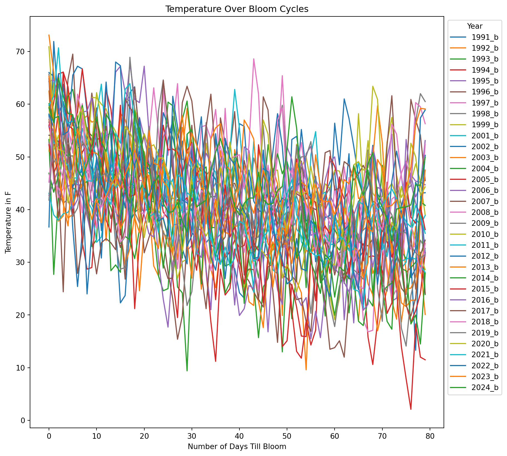
window = 7
plt.figure(figsize=(10, 10))
for year in temp_of_day_from_bloom_df.columns:
bloom_cycle = df[year]
smoothed = bloom_cycle.rolling(window=window).mean()
plt.plot(smoothed.index, smoothed.values, label=str(year))
plt.xlabel('Number of Days Till Bloom')
plt.ylabel('Temperature (Temp Avg), in F')
plt.title('Smoothed Temperature Change Over Bloom Cycles')
plt.legend(title="Year", bbox_to_anchor=(1.05, 1), loc='upper left')
plt.tight_layout()
plt.show()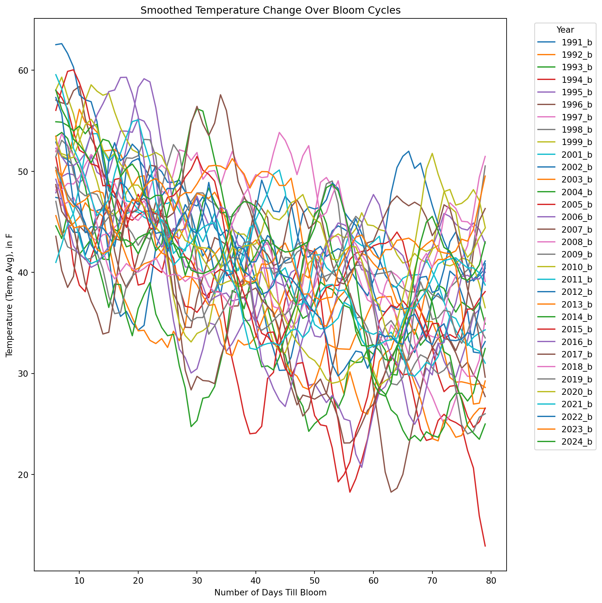
Looking at continuous functions of temperature:
feature_suffixes_cont = ['_sum_sq', '_sum_log', '_sum_last14', '_rolling_temp_change']
for suffix in feature_suffixes_cont:
cv = df[[col for col in df.columns if col.endswith(suffix)]]
plt.figure(figsize=(10, 3))
plt.xlabel('Number of Days Till Bloom')
plt.xticks(np.arange(0, 115, 5))
plt.title('Patterns of ' + suffix)
plt.ylabel(suffix)
for year in cv.columns:
bloom_cycle = df[year]
plt.plot(bloom_cycle.index,bloom_cycle.values)
plt.show()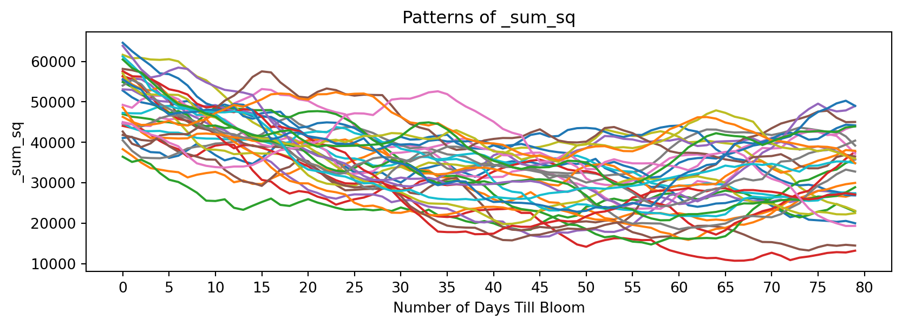
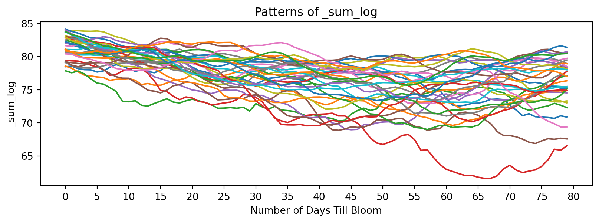
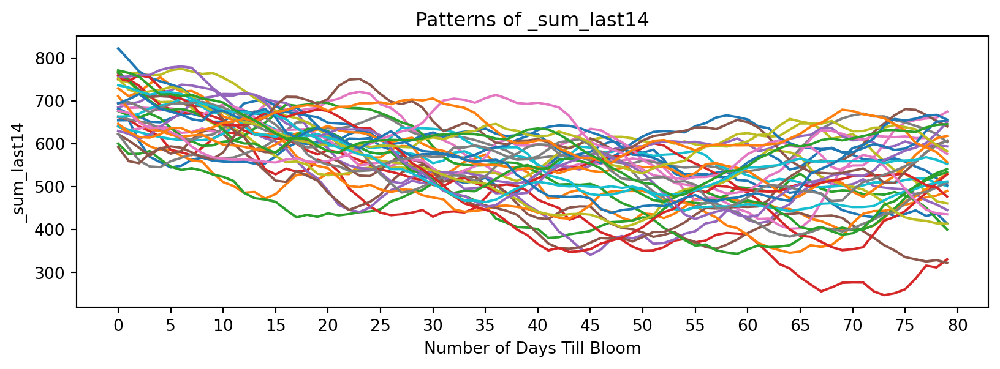
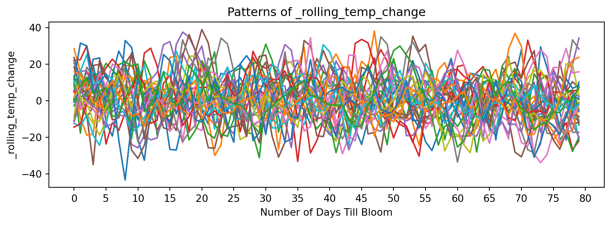
Now discrete functions of temperature:
feature_suffixes_disc = ['_sum_dd32', '_sum_dd50','_norm_dd_32', '_norm_dd_50','_rolling_freeze', '_rolling_chill',]
for suffix in feature_suffixes_disc:
cv = df[[col for col in df.columns if col.endswith(suffix)]]
plt.figure(figsize=(10, 3))
plt.xlabel('Number of Days Till Bloom')
plt.xticks(np.arange(0, 115, 5))
plt.title('Patterns of ' + suffix)
plt.ylabel(suffix)
for year in cv.columns:
bloom_cycle = df[year]
plt.plot(bloom_cycle.index,bloom_cycle.values,
marker='o', linestyle='-', markersize=4, label=year
)
plt.show()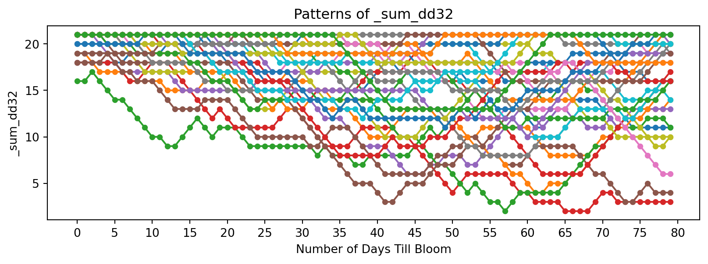
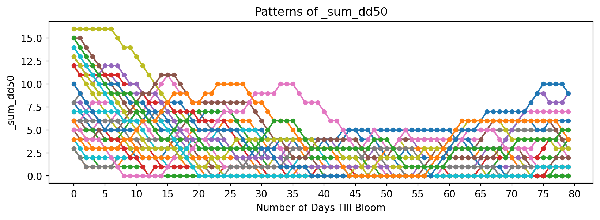
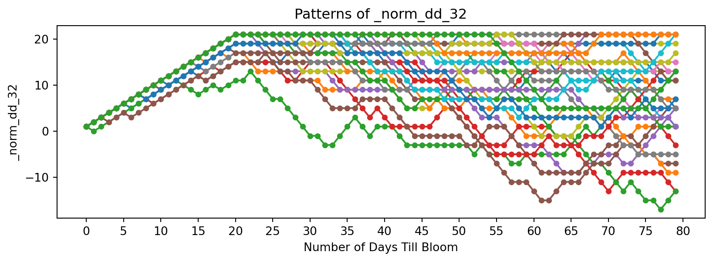
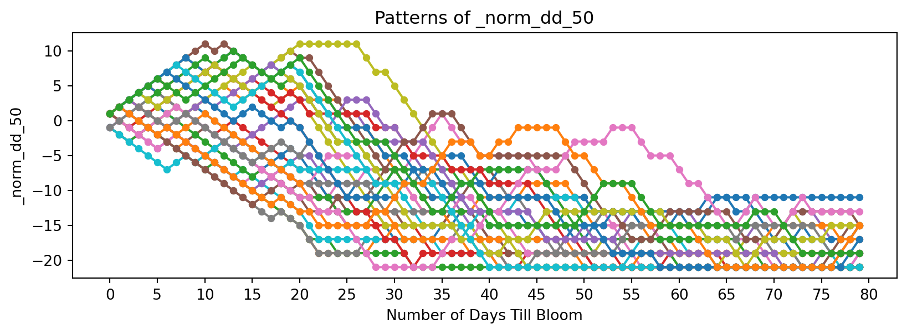
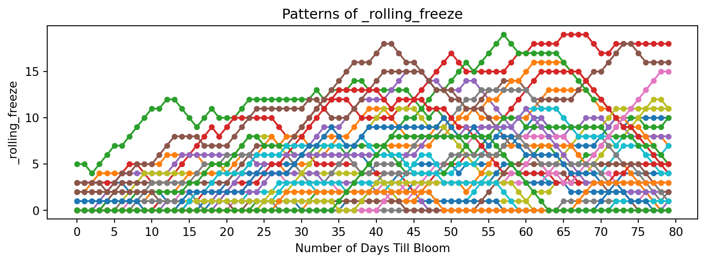
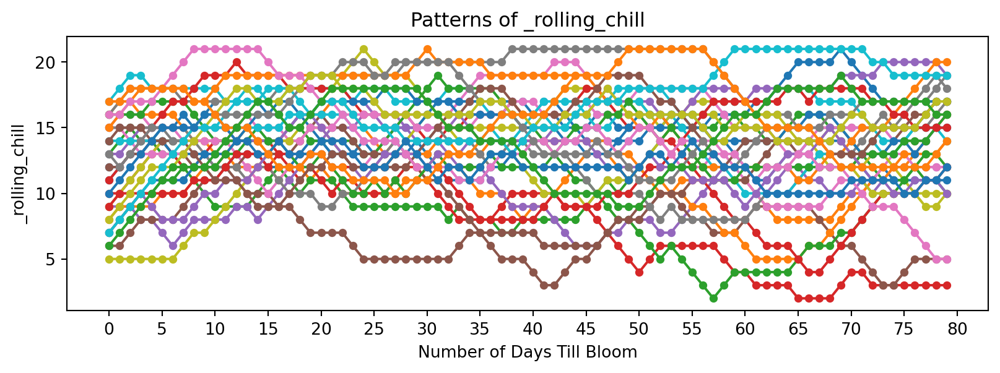
Prediction
Now let’s define some methods that will help us experiment and predict on data.
# DEFINE METHODS FOR PREDICTING BLOOM FOR 2025
def extract_historical_feature_sets(df, feature_suffixes):
"""
Returns a dict where keys are feature suffixes, and values are DF of those suffixes.
"""
feature_sets = {}
for suffix in feature_suffixes:
historical_features = df[[col for col in df.columns if col.endswith(suffix)]]
feature_sets[suffix] = historical_features
return feature_sets
def predict_from_arrays(historical_feature_sets, test_sequences):
"""
- historical_feature_sets: dict where keys are feature suffixes, and values are DF of those suffixes
- test_sequences: dict where keys are feature suffixes, values are test numpy arrays.
Returns:
- results: dict with best-matching year, best days_till_bloom index, and distance for each feature type.
"""
results = {}
for suffix, test_seq in test_sequences.items():
best_match = None
best_distance = float('inf')
best_days_till_bloom = None
historical_data = historical_feature_sets[suffix]
for year in historical_data.columns:
hist_seq = historical_data[year].values.flatten()
# FastDTW over a sliding window
for days_till_bloom in range(len(hist_seq) - len(test_seq) + 1):
window = hist_seq[days_till_bloom: days_till_bloom + len(test_seq)]
distance, _ = fastdtw(window, test_seq, dist=2)
if distance < best_distance:
best_distance = distance
best_match = year
best_days_till_bloom = days_till_bloom
results[suffix] = (best_match, best_days_till_bloom, best_distance)
#print(f"Feature: {suffix}, Best Match: {best_match}, Days_till_bloom: {best_days_till_bloom}, Distance: {best_distance}")
return results
# feature suffixes
feature_suffixes = ['_sum_sq', '_sum_log', '_sum_dd32', '_sum_dd50', '_sum_last14',
'_norm_dd_32', '_norm_dd_50','_rolling_freeze', '_rolling_chill', '_rolling_temp_change'
]
# historical feature sets
historical_feature_sets = extract_historical_feature_sets(df, feature_suffixes)Here, the prediction function uses FastDTW to compare vectors of time series. It finds the lowest Euclidean norm (L2) between a given input and a historical data. This slice of temperature input is thought to be “sliding” across the time, checking for patterns and attempting to match it to a historical bloom cycle. After completing the computations, it returns the lowest L2 norm and what the implied days_till_bloom is. This can be used to predict where we currently are in the cycle, which intuitively allows us to estimate when it will bloom. This process was used due to the fact that future temperature data would not need to be modeled or predicted.
# BUILDING 2025 TEMPERATURE SET DATAFRAME FOR 5 LOCATIONS
wdc_weather2025 = pd.read_csv('data/wdc_weather2025.csv')
liestal_weather2025 = pd.read_csv('data/liestal_weather2025.csv')
kyoto_weather2025 = pd.read_csv('data/kyoto_weather2025.csv')
vancouver_weather2025 = pd.read_csv('data/vancouver_weather2025.csv')
nyc_weather2025 = pd.read_csv('data/nyc_weather2025.csv')
wdc_weather2025['Date'] = pd.to_datetime(wdc_weather2025['Date'])
liestal_weather2025['Date'] = pd.to_datetime(liestal_weather2025['Date'])
kyoto_weather2025['Date'] = pd.to_datetime(kyoto_weather2025['Date'])
vancouver_weather2025['Date'] = pd.to_datetime(vancouver_weather2025['Date'])
nyc_weather2025['Date'] = pd.to_datetime(nyc_weather2025['Date'])
wdc_weather2025.name = "Washington DC"
liestal_weather2025.name = "Liestal"
kyoto_weather2025.name = "Kyoto"
vancouver_weather2025.name = "Vancouver"
nyc_weather2025.name = "NYC"
all_locations = [wdc_weather2025,liestal_weather2025, kyoto_weather2025, vancouver_weather2025, nyc_weather2025]This function computes the temperature prediction for all 5 locations:
data = []
for loc in all_locations:
temp_2025_dc = loc.sort_values(by='Date', ascending=False)[['Temp_avg']]
temp_2025_dc.columns=['2025_b']
for col in temp_2025_dc.columns:
if col.endswith('_b'):
temp_2025_dc[f'{col}_sum_sq'] = temp_2025_dc[col][::-1].pow(2).rolling(window=21, min_periods=1).sum()[::-1]
temp_2025_dc[f'{col}_sum_log'] = temp_2025_dc[col][::-1].apply(lambda x: np.log(x + 1)).rolling(window=21, min_periods=1).sum()[::-1]
temp_2025_dc[f'{col}_sum_dd32'] = (temp_2025_dc[col][::-1] > 32).rolling(window=21, min_periods=1).sum()[::-1]
temp_2025_dc[f'{col}_sum_dd50'] = (temp_2025_dc[col][::-1] > 50).rolling(window=21, min_periods=1).sum()[::-1]
temp_2025_dc[f'{col}_sum_last14'] = temp_2025_dc[col][::-1].rolling(window=14, min_periods=1).sum()[::-1]
temp_2025_dc[f'{col}_norm_dd_32'] = ((temp_2025_dc[col] > 32).astype(int) * 1 + (temp_2025_dc[col] <= 32).astype(int) * -1).rolling(window=21, min_periods=1).sum()[::-1]
temp_2025_dc[f'{col}_norm_dd_50'] = ((temp_2025_dc[col] > 50).astype(int) * 1 + (temp_2025_dc[col] <= 50).astype(int) * -1).rolling(window=21, min_periods=1).sum()[::-1]
temp_2025_dc[f'{col}_rolling_freeze'] = (temp_2025_dc[col][::-1] < 32).rolling(window=21, min_periods=1).sum()[::-1]
temp_2025_dc[f'{col}_rolling_chill'] = ((temp_2025_dc[col][::-1] >= 32) & (temp_2025_dc[col][::-1] < 50)).rolling(window=21, min_periods=1).sum()[::-1]
temp_2025_dc[f'{col}_rolling_temp_change'] = temp_2025_dc[col][::-1].diff(periods=7)[::-1]
temp_2025_dc = temp_2025_dc.head(50)
all_results = []
intervals = [10,20,30,40]
for interval in intervals:
temp_2025_dc_df = temp_2025_dc.head(interval)
test_sequences = {
'_sum_sq': np.array(temp_2025_dc_df['2025_b_sum_sq']),
'_sum_log': np.array(temp_2025_dc_df['2025_b_sum_log']),
'_sum_dd32': np.array(temp_2025_dc_df['2025_b_sum_dd32']),
'_sum_dd50': np.array(temp_2025_dc_df['2025_b_sum_dd50']),
'_sum_last14': np.array(temp_2025_dc_df['2025_b_sum_last14']),
'_norm_dd_32': np.array(temp_2025_dc_df['2025_b_norm_dd_32']),
'_norm_dd_50': np.array(temp_2025_dc_df['2025_b_norm_dd_50']),
'_rolling_freeze': np.array(temp_2025_dc_df['2025_b_rolling_freeze']),
'_rolling_chill': np.array(temp_2025_dc_df['2025_b_rolling_chill']),
'_rolling_temp_change': np.array(temp_2025_dc_df['2025_b_rolling_temp_change']),
}
all_results.append((interval, predict_from_arrays(historical_feature_sets, test_sequences)))
#all_results
print("Results for " + loc.name)
for result in all_results:
print(result)
arrays = []
for j in range(len(feature_suffixes)):
arrays.append([])
for i in range(4):
for j in range(len(feature_suffixes)):
arrays[j].append(all_results[i][1][feature_suffixes[j]][1])
data.append((loc.name, arrays))
print("----- ----- -----")Results for Washington DC
(10, {'_sum_sq': ('1991_b_sum_sq', 24, 3852.680000000011), '_sum_log': ('2013_b_sum_log', 41, 1.0494271412236884), '_sum_dd32': ('1991_b_sum_dd32', 0, 0.0), '_sum_dd50': ('1992_b_sum_dd50', 31, 0.0), '_sum_last14': ('2005_b_sum_last14', 23, 54.799999999999955), '_norm_dd_32': ('1994_b_norm_dd_32', 0, 0.0), '_norm_dd_50': ('2018_b_norm_dd_50', 4, 0.0), '_rolling_freeze': ('1991_b_rolling_freeze', 0, 0.0), '_rolling_chill': ('1999_b_rolling_chill', 34, 0.0), '_rolling_temp_change': ('1997_b_rolling_temp_change', 59, 24.800000000000008)})
(20, {'_sum_sq': ('2013_b_sum_sq', 37, 13526.310000000023), '_sum_log': ('2005_b_sum_log', 33, 5.482217935625627), '_sum_dd32': ('1991_b_sum_dd32', 6, 0.0), '_sum_dd50': ('1998_b_sum_dd50', 17, 0.0), '_sum_last14': ('2024_b_sum_last14', 46, 127.79999999999995), '_norm_dd_32': ('1994_b_norm_dd_32', 0, 2.0), '_norm_dd_50': ('2018_b_norm_dd_50', 4, 2.0), '_rolling_freeze': ('1991_b_rolling_freeze', 6, 0.0), '_rolling_chill': ('2001_b_rolling_chill', 55, 4.0), '_rolling_temp_change': ('2011_b_rolling_temp_change', 38, 71.59999999999997)})
(30, {'_sum_sq': ('1991_b_sum_sq', 34, 18253.010000000024), '_sum_log': ('2009_b_sum_log', 22, 8.464229549028587), '_sum_dd32': ('1991_b_sum_dd32', 1, 7.0), '_sum_dd50': ('1991_b_sum_dd50', 36, 0.0), '_sum_last14': ('2009_b_sum_last14', 23, 191.9999999999996), '_norm_dd_32': ('1991_b_norm_dd_32', 1, 7.0), '_norm_dd_50': ('1993_b_norm_dd_50', 2, 5.0), '_rolling_freeze': ('1991_b_rolling_freeze', 1, 7.0), '_rolling_chill': ('1997_b_rolling_chill', 27, 4.0), '_rolling_temp_change': ('2005_b_rolling_temp_change', 33, 124.59999999999995)})
(40, {'_sum_sq': ('1991_b_sum_sq', 35, 32586.250000000022), '_sum_log': ('2005_b_sum_log', 22, 11.476110915306847), '_sum_dd32': ('1999_b_sum_dd32', 40, 14.0), '_sum_dd50': ('1991_b_sum_dd50', 36, 0.0), '_sum_last14': ('2005_b_sum_last14', 24, 321.99999999999966), '_norm_dd_32': ('2009_b_norm_dd_32', 0, 8.0), '_norm_dd_50': ('2001_b_norm_dd_50', 0, 6.0), '_rolling_freeze': ('1999_b_rolling_freeze', 40, 15.0), '_rolling_chill': ('1997_b_rolling_chill', 27, 9.0), '_rolling_temp_change': ('2019_b_rolling_temp_change', 20, 182.9)})
----- ----- -----
Results for Liestal
(10, {'_sum_sq': ('2002_b_sum_sq', 66, 2793.6500000000015), '_sum_log': ('2004_b_sum_log', 29, 0.779998276216844), '_sum_dd32': ('1997_b_sum_dd32', 27, 0.0), '_sum_dd50': ('1991_b_sum_dd50', 53, 0.0), '_sum_last14': ('2002_b_sum_last14', 69, 30.700000000000045), '_norm_dd_32': ('1992_b_norm_dd_32', 0, 0.0), '_norm_dd_50': ('1996_b_norm_dd_50', 10, 0.0), '_rolling_freeze': ('1997_b_rolling_freeze', 27, 0.0), '_rolling_chill': ('2013_b_rolling_chill', 31, 0.0), '_rolling_temp_change': ('2001_b_rolling_temp_change', 18, 26.899999999999988)})
(20, {'_sum_sq': ('1999_b_sum_sq', 18, 10711.30000000001), '_sum_log': ('2008_b_sum_log', 45, 2.978655652284772), '_sum_dd32': ('1997_b_sum_dd32', 27, 0.0), '_sum_dd50': ('1993_b_sum_dd50', 58, 0.0), '_sum_last14': ('1998_b_sum_last14', 43, 80.00000000000034), '_norm_dd_32': ('2002_b_norm_dd_32', 0, 2.0), '_norm_dd_50': ('1992_b_norm_dd_50', 4, 4.0), '_rolling_freeze': ('1997_b_rolling_freeze', 27, 0.0), '_rolling_chill': ('2013_b_rolling_chill', 29, 3.0), '_rolling_temp_change': ('2013_b_rolling_temp_change', 23, 55.79999999999997)})
(30, {'_sum_sq': ('2013_b_sum_sq', 28, 19976.200000000015), '_sum_log': ('2008_b_sum_log', 22, 7.369746634481103), '_sum_dd32': ('1997_b_sum_dd32', 24, 0.0), '_sum_dd50': ('1993_b_sum_dd50', 48, 0.0), '_sum_last14': ('1998_b_sum_last14', 36, 213.60000000000014), '_norm_dd_32': ('2002_b_norm_dd_32', 0, 2.0), '_norm_dd_50': ('1993_b_norm_dd_50', 4, 4.0), '_rolling_freeze': ('1997_b_rolling_freeze', 23, 0.0), '_rolling_chill': ('2013_b_rolling_chill', 26, 7.0), '_rolling_temp_change': ('2013_b_rolling_temp_change', 23, 99.09999999999997)})
(40, {'_sum_sq': ('2005_b_sum_sq', 18, 17272.089999999997), '_sum_log': ('2005_b_sum_log', 18, 10.720291321811246), '_sum_dd32': ('1997_b_sum_dd32', 17, 4.0), '_sum_dd50': ('1994_b_sum_dd50', 22, 0.0), '_sum_last14': ('2005_b_sum_last14', 22, 395.2999999999997), '_norm_dd_32': ('2002_b_norm_dd_32', 0, 8.0), '_norm_dd_50': ('1994_b_norm_dd_50', 14, 7.0), '_rolling_freeze': ('1997_b_rolling_freeze', 27, 3.0), '_rolling_chill': ('2013_b_rolling_chill', 16, 16.0), '_rolling_temp_change': ('2013_b_rolling_temp_change', 21, 147.8)})
----- ----- -----
Results for Kyoto
(10, {'_sum_sq': ('1997_b_sum_sq', 35, 3806.989999999998), '_sum_log': ('1997_b_sum_log', 35, 0.9963614374403846), '_sum_dd32': ('1997_b_sum_dd32', 0, 0.0), '_sum_dd50': ('1991_b_sum_dd50', 53, 0.0), '_sum_last14': ('2013_b_sum_last14', 31, 29.999999999999773), '_norm_dd_32': ('1992_b_norm_dd_32', 0, 0.0), '_norm_dd_50': ('1996_b_norm_dd_50', 10, 0.0), '_rolling_freeze': ('1997_b_rolling_freeze', 0, 0.0), '_rolling_chill': ('1998_b_rolling_chill', 38, 0.0), '_rolling_temp_change': ('2024_b_rolling_temp_change', 68, 21.599999999999994)})
(20, {'_sum_sq': ('1991_b_sum_sq', 32, 11540.369999999988), '_sum_log': ('2012_b_sum_log', 48, 2.9421979249935077), '_sum_dd32': ('1997_b_sum_dd32', 0, 0.0), '_sum_dd50': ('1991_b_sum_dd50', 53, 0.0), '_sum_last14': ('2013_b_sum_last14', 31, 54.19999999999993), '_norm_dd_32': ('1995_b_norm_dd_32', 0, 0.0), '_norm_dd_50': ('1992_b_norm_dd_50', 4, 4.0), '_rolling_freeze': ('1997_b_rolling_freeze', 0, 0.0), '_rolling_chill': ('1998_b_rolling_chill', 37, 1.0), '_rolling_temp_change': ('2013_b_rolling_temp_change', 28, 59.70000000000001)})
(30, {'_sum_sq': ('1999_b_sum_sq', 19, 20571.660000000007), '_sum_log': ('2012_b_sum_log', 47, 4.449839565681472), '_sum_dd32': ('1998_b_sum_dd32', 17, 0.0), '_sum_dd50': ('1992_b_sum_dd50', 45, 0.0), '_sum_last14': ('1998_b_sum_last14', 37, 136.39999999999986), '_norm_dd_32': ('1997_b_norm_dd_32', 0, 0.0), '_norm_dd_50': ('1993_b_norm_dd_50', 4, 4.0), '_rolling_freeze': ('1998_b_rolling_freeze', 17, 0.0), '_rolling_chill': ('1998_b_rolling_chill', 28, 11.0), '_rolling_temp_change': ('2001_b_rolling_temp_change', 1, 87.29999999999998)})
(40, {'_sum_sq': ('1999_b_sum_sq', 30, 51632.58000000003), '_sum_log': ('1999_b_sum_log', 30, 11.255820258773852), '_sum_dd32': ('1998_b_sum_dd32', 26, 0.0), '_sum_dd50': ('1993_b_sum_dd50', 12, 0.0), '_sum_last14': ('1999_b_sum_last14', 14, 332.0999999999991), '_norm_dd_32': ('1997_b_norm_dd_32', 0, 0.0), '_norm_dd_50': ('1993_b_norm_dd_50', 4, 4.0), '_rolling_freeze': ('1998_b_rolling_freeze', 17, 0.0), '_rolling_chill': ('1998_b_rolling_chill', 19, 29.0), '_rolling_temp_change': ('1998_b_rolling_temp_change', 18, 118.39999999999992)})
----- ----- -----
Results for Vancouver
(10, {'_sum_sq': ('1999_b_sum_sq', 69, 3539.059999999994), '_sum_log': ('2004_b_sum_log', 33, 1.8825529727395605), '_sum_dd32': ('1991_b_sum_dd32', 52, 0.0), '_sum_dd50': ('1991_b_sum_dd50', 53, 0.0), '_sum_last14': ('2016_b_sum_last14', 24, 41.80000000000041), '_norm_dd_32': ('1992_b_norm_dd_32', 0, 0.0), '_norm_dd_50': ('1996_b_norm_dd_50', 10, 0.0), '_rolling_freeze': ('1991_b_rolling_freeze', 52, 0.0), '_rolling_chill': ('1991_b_rolling_chill', 53, 0.0), '_rolling_temp_change': ('2010_b_rolling_temp_change', 13, 21.50000000000001)})
(20, {'_sum_sq': ('2003_b_sum_sq', 16, 10951.32), '_sum_log': ('1997_b_sum_log', 42, 3.912478765509377), '_sum_dd32': ('1991_b_sum_dd32', 47, 2.0), '_sum_dd50': ('1991_b_sum_dd50', 53, 0.0), '_sum_last14': ('1993_b_sum_last14', 0, 205.39999999999975), '_norm_dd_32': ('1994_b_norm_dd_32', 0, 10.0), '_norm_dd_50': ('1992_b_norm_dd_50', 4, 4.0), '_rolling_freeze': ('1991_b_rolling_freeze', 47, 2.0), '_rolling_chill': ('2013_b_rolling_chill', 52, 0.0), '_rolling_temp_change': ('2010_b_rolling_temp_change', 13, 46.600000000000016)})
(30, {'_sum_sq': ('2010_b_sum_sq', 22, 15917.249999999978), '_sum_log': ('2010_b_sum_log', 24, 6.122629691371159), '_sum_dd32': ('2016_b_sum_dd32', 44, 11.0), '_sum_dd50': ('1992_b_sum_dd50', 45, 0.0), '_sum_last14': ('2022_b_sum_last14', 26, 221.99999999999977), '_norm_dd_32': ('1993_b_norm_dd_32', 0, 14.0), '_norm_dd_50': ('1993_b_norm_dd_50', 4, 4.0), '_rolling_freeze': ('2016_b_rolling_freeze', 44, 11.0), '_rolling_chill': ('2013_b_rolling_chill', 49, 5.0), '_rolling_temp_change': ('2021_b_rolling_temp_change', 45, 80.49999999999994)})
(40, {'_sum_sq': ('2010_b_sum_sq', 22, 20165.759999999973), '_sum_log': ('2010_b_sum_log', 24, 10.418869760718167), '_sum_dd32': ('2022_b_sum_dd32', 38, 9.0), '_sum_dd50': ('1993_b_sum_dd50', 12, 0.0), '_sum_last14': ('2010_b_sum_last14', 20, 231.6000000000007), '_norm_dd_32': ('1994_b_norm_dd_32', 9, 37.0), '_norm_dd_50': ('1993_b_norm_dd_50', 4, 4.0), '_rolling_freeze': ('2022_b_rolling_freeze', 38, 8.0), '_rolling_chill': ('2023_b_rolling_chill', 10, 5.0), '_rolling_temp_change': ('2010_b_rolling_temp_change', 12, 112.39999999999998)})
----- ----- -----
Results for NYC
(10, {'_sum_sq': ('2011_b_sum_sq', 42, 4121.240000000002), '_sum_log': ('2016_b_sum_log', 49, 0.9733589713594881), '_sum_dd32': ('2019_b_sum_dd32', 53, 0.0), '_sum_dd50': ('1991_b_sum_dd50', 53, 0.0), '_sum_last14': ('2022_b_sum_last14', 39, 58.699999999999875), '_norm_dd_32': ('1994_b_norm_dd_32', 41, 5.0), '_norm_dd_50': ('1996_b_norm_dd_50', 10, 0.0), '_rolling_freeze': ('2019_b_rolling_freeze', 53, 0.0), '_rolling_chill': ('2012_b_rolling_chill', 41, 0.0), '_rolling_temp_change': ('2012_b_rolling_temp_change', 52, 30.899999999999995)})
(20, {'_sum_sq': ('1993_b_sum_sq', 8, 14104.629999999997), '_sum_log': ('1996_b_sum_log', 20, 7.187871515130922), '_sum_dd32': ('2014_b_sum_dd32', 36, 6.0), '_sum_dd50': ('1991_b_sum_dd50', 53, 0.0), '_sum_last14': ('1993_b_sum_last14', 11, 122.59999999999991), '_norm_dd_32': ('1993_b_norm_dd_32', 0, 20.0), '_norm_dd_50': ('1992_b_norm_dd_50', 4, 4.0), '_rolling_freeze': ('2014_b_rolling_freeze', 36, 6.0), '_rolling_chill': ('2004_b_rolling_chill', 23, 5.0), '_rolling_temp_change': ('2023_b_rolling_temp_change', 40, 62.999999999999986)})
(30, {'_sum_sq': ('1993_b_sum_sq', 7, 20540.860000000004), '_sum_log': ('2010_b_sum_log', 50, 14.727854823709848), '_sum_dd32': ('2005_b_sum_dd32', 28, 7.0), '_sum_dd50': ('1992_b_sum_dd50', 45, 0.0), '_sum_last14': ('1993_b_sum_last14', 9, 280.19999999999965), '_norm_dd_32': ('1993_b_norm_dd_32', 0, 44.0), '_norm_dd_50': ('1993_b_norm_dd_50', 4, 4.0), '_rolling_freeze': ('2014_b_rolling_freeze', 36, 7.0), '_rolling_chill': ('2004_b_rolling_chill', 16, 7.0), '_rolling_temp_change': ('2005_b_rolling_temp_change', 33, 105.79999999999998)})
(40, {'_sum_sq': ('1993_b_sum_sq', 8, 23326.34), '_sum_log': ('1993_b_sum_log', 5, 22.32314793928245), '_sum_dd32': ('2005_b_sum_dd32', 31, 9.0), '_sum_dd50': ('1993_b_sum_dd50', 12, 0.0), '_sum_last14': ('1993_b_sum_last14', 11, 408.5999999999997), '_norm_dd_32': ('1996_b_norm_dd_32', 0, 36.0), '_norm_dd_50': ('1993_b_norm_dd_50', 4, 4.0), '_rolling_freeze': ('2009_b_rolling_freeze', 26, 15.0), '_rolling_chill': ('2004_b_rolling_chill', 9, 14.0), '_rolling_temp_change': ('2005_b_rolling_temp_change', 33, 175.00000000000003)})
----- ----- -----After computing the estimated days_till_bloom for differing interval lengths, we can compare the estimated days. There are many outliers in the prediction, and the predictions can be wildly different at times. The chosen dates were picked in a non-rigorous, intuitive approach. While this may not be an ideal method for repeatability, for this specific prediction it might be okay. That’s because many of the high variance points are very unlikely; for example, points like 0 or 50 mean that the model thinks the trees are blooming today or in 50 days. We can reason intuitively that neither of these cases are/will happen, based on historical blooms. Thus, the median values we are left with are used to create the prediction and prediction intervals.
Table for Washington DC
- columns represent the size of the testing interval.
- Values represent the predicted days_till_bloom
| Feature | 10 | 20 | 30 | 40 |
|---|---|---|---|---|
| _sum_sq | 24 | 37 | 34 | 32 |
| _sum_log | 41 | 33 | 22 | 21 |
| _sum_dd32 | 0 | 6 | 1 | 40 |
| _sum_dd50 | 31 | 17 | 36 | 18 |
…and more values.
In the end, the final predictions for bloom dates (day of year) are:
| location | prediction | lower | upper |
|---|---|---|---|
| washingtondc | 88 | 84 | 91 |
| liestal | 85 | 83 | 90 |
| kyoto | 91 | 88 | 97 |
| vancouver | 88 | 84 | 94 |
| newyorkcity | 95 | 93 | 97 |
Limitations
While the initial results seem like they have potential, it is important to mention the many limitations of this modeling.
- Data set only trained on Washington DC temperatures; may not be comparable to other countries
- Training on more years past 1990
- Differing cycle lengths may impact prediction
- Low historical training data for places like NYC
- Different breeds of cherry blossoms might have different cycles and cycle patterns
- Not accounting for special impactful events (storms, dry spells, etc)
- Likely better results using other variables alongside temperature (emissions, sunlight, rainfall)
- Predictions and predictions intervals not chosen using empirical and repeatable method